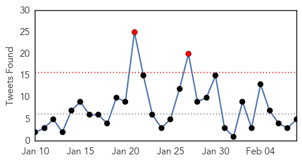
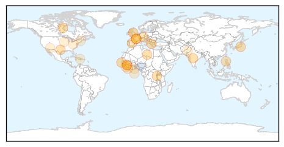
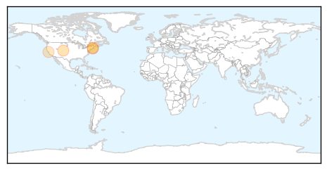

Ebola
30-Day Web Trend
0 alerts, 0 warnings

30-Day Twitter Trend
2 alerts, 0 warnings

Article Locations
Article Confidences

Top Articles:
- 0.997
- Guinea to Expand Use of Experimental Anti-Ebola Drugs
- 0.997
- The Government of Canada announces return of a mobile laboratory from Kailahun, Sierra Leone
- 0.995
- Ebola vaccines testing starts in Liberia
- 0.990
- Guinea To Expand Use Of Experimental Anti-Ebola Drugs
- 0.988
- Government pledges nearly £33m to new Ebola fund
- 0.958
- We must separate fact from fiction on health
- 0.951
- Japan blocks journalist from flying to Syria citing concerns for personal safety
- 0.951
- Former US Federal Reserve head says Eurozone cannot survive with Greece
- 0.951
- US airline execs want government to annul open skies agreement with GCC states
- 0.951
- Jailing of Burundian journalist raises concerns ahead of elections says UN rights office
- 0.951
- Tunisia Arrests 32 Militants, Says It Foiled 'Spectacular' Attacks
- 0.839
- West African communities receiving Ebola’s orphans with open arms
- 0.838
- World leaders meet over safeguarding future global security
- 0.836
- Fort Magsaysay eyed as quarantine area for Ebola patients
- 0.815
- Calgary woman leaves for Ebola-stricken Sierra Leone
- 0.636
- Nobel Laureate Leymah Gbowee Raises Ebola Awareness
- 0.590
- I'll tackle challenges facing West African sub region
- 0.529
- Mahama proposes cooperation against international crisis
- 0.528
- President Mahama feasts with the Diplomatic Corps at Peduase
- 0.521
- Billions Go To Victims Of Disaster And Disease. Does It Really Help?
- 0.521
- Billions Go To Victims Of Disaster And Disease. Does It Really Help?
- 0.521
- Billions Go To Victims Of Disaster And Disease. Does It Really Help?
- 0.521
- Billions Go To Victims Of Disaster And Disease. Does It Really Help?
- 0.521
- Billions Go To Victims Of Disaster And Disease. Does It Really Help?
- 0.521
- Billions Go To Victims Of Disaster And Disease. Does It Really Help?
- 0.505
- 1,000th solar suitcase is a beacon in developing world
- 0.504
- Billions Go To Victims Of Disaster And Disease. Does It Really Help?
Top Tweets:
- 0.885
- Fort Magsaysay eyed as quarantine area for Ebola patients - Philippine Star http://t.co/Wng3ZFRfGv ebola EVD
- 0.834
- Ebola Challenges Hands-On Tool - New York Times http://t.co/BU9fKskzoH ebola EVD
- 0.799
- Burnings, Bombings, Ebola: Not All Dramatic Events Are ?Game-Changers? - Daily Beast http://t.co/7MKqWIEMnH ebola EVD
- 0.799
- Burnings, Bombings, Ebola: Not All Dramatic Events Are ?Game-Changers? - Daily Beast http://t.co/7KMJQKQBQu ebola EVD
- 0.784
- Morristown doctor tells story of fighting Ebola - Knoxville News Sentinel http://t.co/pe5yVFoZgt ebola EVD
- 0.784
- Morristown doctor tells story of fighting Ebola - Knoxville News Sentinel http://t.co/fisjlBT2Dr ebola EVD
- 0.723
- In Treating Ebola, Even Using a Stethoscope Becomes a Challenge - New York Times http://t.co/oEpXHrx0mK ebola EVD
- 0.723
- In Treating Ebola, Even Using a Stethoscope Becomes a Challenge - New York Times http://t.co/lNTtDl19Vm ebola EVD
- 0.662
- .@ALMA2015 awards Sierra Leone health sector for achievements in fighting malaria & its progress prior to Ebola http://t.co/WBWiY0KQ59
- 0.646
- RT: Clinical trials for an Ebola vaccine will begin in Guinea, Liberia, and Sierra Leone in the coming weeks: http://t.co/hGH06mYF…
- 0.638
- Ebola's Ecologies http://t.co/V3PW0DSGol
- 0.571
- .@UNICEF & partners in Liberia step up vaccinations again measles that were put on hold due to Ebola. EbolaResponse http://t.co/XQB4NiVs02
Meningitis
30-Day Web Trend
0 alerts, 0 warnings
30-Day Twitter Trend
0 alerts, 0 warnings

Article Locations
Article Confidences
Top Articles:
Top Tweets:
-
No tweets found for Feb 08, 2015